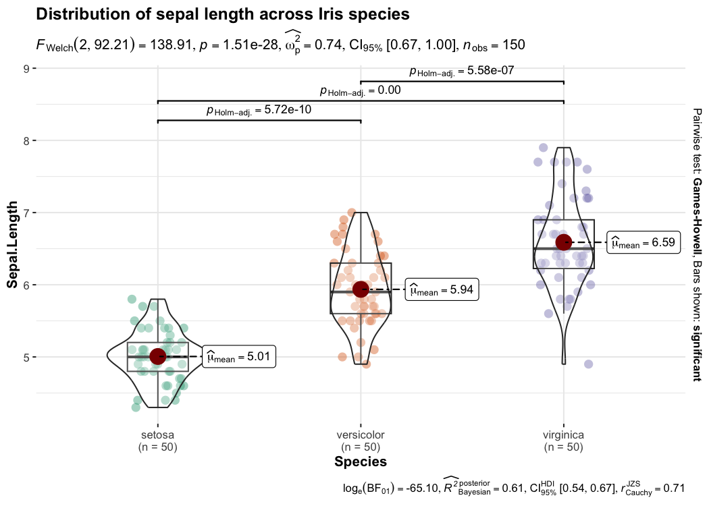
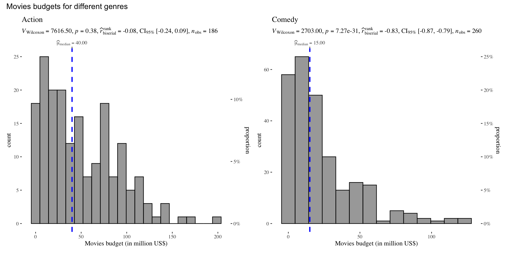
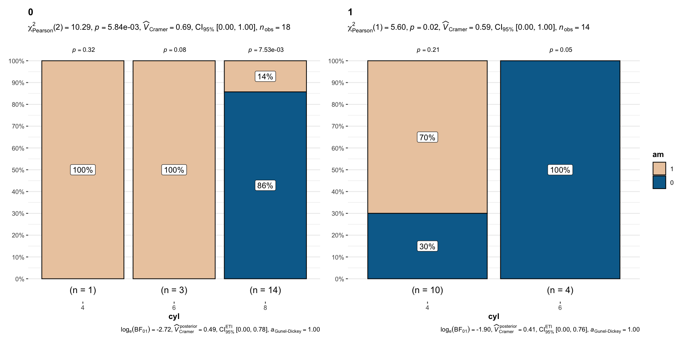

Raison d’être 
“What is to be sought in designs for the display of information is the clear portrayal of complexity. Not the complication of the simple; rather … the revelation of the complex.” - Edward R. Tufte
{ggstatsplot} is an extension of {ggplot2} package for creating graphics with details from statistical tests included in the information-rich plots themselves. In a typical exploratory data analysis workflow, data visualization and statistical modeling are two different phases: visualization informs modeling, and modeling in its turn can suggest a different visualization method, and so on and so forth. The central idea of ggstatsplot is simple: combine these two phases into one in the form of graphics with statistical details, which makes data exploration simpler and faster.
Installation
| Type | Source | Command |
|---|---|---|
| Release | install.packages("ggstatsplot") |
|
| Development |  |
remotes::install_github("IndrajeetPatil/ggstatsplot") |
Citation
If you want to cite this package in a scientific journal or in any other context, run the following code in your R console:
citation("ggstatsplot")
Patil, I. (2021). Visualizations with statistical details: The
'ggstatsplot' approach. Journal of Open Source Software, 6(61), 3167,
doi:10.21105/joss.03167
A BibTeX entry for LaTeX users is
@Article{,
doi = {10.21105/joss.03167},
url = {https://doi.org/10.21105/joss.03167},
year = {2021},
publisher = {{The Open Journal}},
volume = {6},
number = {61},
pages = {3167},
author = {Indrajeet Patil},
title = {{Visualizations with statistical details: The {'ggstatsplot'} approach}},
journal = {{Journal of Open Source Software}},
}Acknowledgments
I would like to thank all the contributors to ggstatsplot who pointed out bugs or requested features I hadn’t considered. I would especially like to thank other package developers (especially Daniel Lüdecke, Dominique Makowski, Mattan S. Ben-Shachar, Brenton Wiernik, Patrick Mair, Salvatore Mangiafico, etc.) who have patiently and diligently answered my relentless questions and supported feature requests in their projects. I also want to thank Chuck Powell for his initial contributions to the package.
The hexsticker was generously designed by Sarah Otterstetter (Max Planck Institute for Human Development, Berlin). This package has also benefited from the larger #rstats community on Twitter, LinkedIn, and StackOverflow.
Thanks are also due to my postdoc advisers (Mina Cikara and Fiery Cushman at Harvard University; Iyad Rahwan at Max Planck Institute for Human Development) who patiently supported me spending hundreds (?) of hours working on this package rather than what I was paid to do. üòÅ
Documentation and Examples
To see the detailed documentation for each function in the stable CRAN version of the package, see:
Summary of available plots
It, therefore, produces a limited kinds of plots for the supported analyses:
| Function | Plot | Description | Lifecycle |
|---|---|---|---|
ggbetweenstats |
violin plots | for comparisons between groups/conditions | |
ggwithinstats |
violin plots | for comparisons within groups/conditions | |
gghistostats |
histograms | for distribution about numeric variable | |
ggdotplotstats |
dot plots/charts | for distribution about labeled numeric variable | |
ggscatterstats |
scatterplots | for correlation between two variables | |
ggcorrmat |
correlation matrices | for correlations between multiple variables | |
ggpiestats |
pie charts | for categorical data | |
ggbarstats |
bar charts | for categorical data | |
ggcoefstats |
dot-and-whisker plots | for regression models and meta-analysis |
In addition to these basic plots, ggstatsplot also provides grouped_ versions (see below) that makes it easy to repeat the same analysis for any grouping variable.
Summary of types of statistical analyses
The table below summarizes all the different types of analyses currently supported in this package-
| Functions | Description | Parametric | Non-parametric | Robust | Bayesian |
|---|---|---|---|---|---|
ggbetweenstats |
Between group/condition comparisons | ✅ | ✅ | ✅ | ✅ |
ggwithinstats |
Within group/condition comparisons | ✅ | ✅ | ✅ | ✅ |
gghistostats, ggdotplotstats
|
Distribution of a numeric variable | ✅ | ✅ | ✅ | ✅ |
ggcorrmat |
Correlation matrix | ✅ | ✅ | ✅ | ✅ |
ggscatterstats |
Correlation between two variables | ✅ | ✅ | ✅ | ✅ |
ggpiestats, ggbarstats
|
Association between categorical variables | ✅ | ✅ | ❌ | ✅ |
ggpiestats, ggbarstats
|
Equal proportions for categorical variable levels | ✅ | ✅ | ❌ | ✅ |
ggcoefstats |
Regression model coefficients | ✅ | ✅ | ✅ | ✅ |
ggcoefstats |
Random-effects meta-analysis | ✅ | ❌ | ✅ | ✅ |
Summary of Bayesian analysis
| Analysis | Hypothesis testing | Estimation |
|---|---|---|
| (one/two-sample) t-test | ✅ | ✅ |
| one-way ANOVA | ✅ | ✅ |
| correlation | ✅ | ✅ |
| (one/two-way) contingency table | ✅ | ✅ |
| random-effects meta-analysis | ✅ | ✅ |
Statistical reporting
For all statistical tests reported in the plots, the default template abides by the gold standard for statistical reporting. For example, here are results from Yuen’s test for trimmed means (robust t-test):

Summary of statistical tests and effect sizes
Statistical analysis is carried out by statsExpressions package, and thus a summary table of all the statistical tests currently supported across various functions can be found in article for that package: https://indrajeetpatil.github.io/statsExpressions/articles/stats_details.html
Primary functions
ggbetweenstats
This function creates either a violin plot, a box plot, or a mix of two for between-group or between-condition comparisons with results from statistical tests in the subtitle. The simplest function call looks like this-
## for reproducibility
set.seed(123)
## plot
ggbetweenstats(
data = iris,
x = Species,
y = Sepal.Length,
title = "Distribution of sepal length across Iris species"
)
Defaults return
✅ raw data + distributions
✅ descriptive statistics
✅ inferential statistics
✅ effect size + CIs
✅ pairwise comparisons
✅ Bayesian hypothesis-testing
✅ Bayesian estimation
A number of other arguments can be specified to make this plot even more informative or change some of the default options. Additionally, there is also a grouped_ variant of this function that makes it easy to repeat the same operation across a single grouping variable:
## for reproducibility
set.seed(123)
## plot
grouped_ggbetweenstats(
data = dplyr::filter(movies_long, genre %in% c("Action", "Comedy")),
x = mpaa,
y = length,
grouping.var = genre, ## grouping variable
outlier.tagging = TRUE, ## whether outliers need to be tagged
outlier.label = title, ## variable to be used for tagging outliers
outlier.coef = 2,
ggsignif.args = list(textsize = 4, tip_length = 0.01),
p.adjust.method = "bonferroni", ## method for adjusting p-values for multiple comparisons
## adding new components to `{ggstatsplot}` default
ggplot.component = list(ggplot2::scale_y_continuous(sec.axis = ggplot2::dup_axis())),
caption = "Source: IMDb (Internet Movie Database)",
palette = "default_jama",
package = "ggsci",
plotgrid.args = list(nrow = 1),
annotation.args = list(title = "Differences in movie length by mpaa ratings for different genres")
)
Note here that the function can be used to tag outliers!
Summary of graphics
| graphical element |
geom_ used |
argument for further modification |
|---|---|---|
| raw data | ggplot2::geom_point |
point.args |
| box plot | ggplot2::geom_boxplot |
❌ |
| density plot | ggplot2::geom_violin |
violin.args |
| centrality measure point | ggplot2::geom_point |
centrality.point.args |
| centrality measure label | ggrepel::geom_label_repel |
centrality.label.args |
| outlier point | ggplot2::stat_boxplot |
❌ |
| outlier label | ggrepel::geom_label_repel |
outlier.label.args |
| pairwise comparisons | ggsignif::geom_signif |
ggsignif.args |
Summary of tests
Central tendency measure
| Type | Measure | Function used |
|---|---|---|
| Parametric | mean | parameters::describe_distribution |
| Non-parametric | median | parameters::describe_distribution |
| Robust | trimmed mean | parameters::describe_distribution |
| Bayesian | MAP (maximum a posteriori probability) estimate | parameters::describe_distribution |
Hypothesis testing
| Type | No. of groups | Test | Function used |
|---|---|---|---|
| Parametric | > 2 | Fisher’s or Welch’s one-way ANOVA | stats::oneway.test |
| Non-parametric | > 2 | Kruskal–Wallis one-way ANOVA | stats::kruskal.test |
| Robust | > 2 | Heteroscedastic one-way ANOVA for trimmed means | WRS2::t1way |
| Bayes Factor | > 2 | Fisher’s ANOVA | BayesFactor::anovaBF |
| Parametric | 2 | Student’s or Welch’s t-test | stats::t.test |
| Non-parametric | 2 | Mann–Whitney U test | stats::wilcox.test |
| Robust | 2 | Yuen’s test for trimmed means | WRS2::yuen |
| Bayesian | 2 | Student’s t-test | BayesFactor::ttestBF |
Effect size estimation
| Type | No. of groups | Effect size | CI? | Function used |
|---|---|---|---|---|
| Parametric | > 2 |
|
✅ |
effectsize::omega_squared, effectsize::eta_squared
|
| Non-parametric | > 2 | ✅ | effectsize::rank_epsilon_squared |
|
| Robust | > 2 |
|
✅ | WRS2::t1way |
| Bayes Factor | > 2 | ✅ | performance::r2_bayes |
|
| Parametric | 2 | Cohen’s d, Hedge’s g | ✅ |
effectsize::cohens_d, effectsize::hedges_g
|
| Non-parametric | 2 | r (rank-biserial correlation) | ✅ | effectsize::rank_biserial |
| Robust | 2 |
|
✅ | WRS2::yuen.effect.ci |
| Bayesian | 2 | ✅ | bayestestR::describe_posterior |
Pairwise comparison tests
| Type | Equal variance? | Test | p-value adjustment? | Function used |
|---|---|---|---|---|
| Parametric | No | Games-Howell test | ✅ | PMCMRplus::gamesHowellTest |
| Parametric | Yes | Student’s t-test | ✅ | stats::pairwise.t.test |
| Non-parametric | No | Dunn test | ✅ | PMCMRplus::kwAllPairsDunnTest |
| Robust | No | Yuen’s trimmed means test | ✅ | WRS2::lincon |
| Bayesian | NA |
Student’s t-test | NA |
BayesFactor::ttestBF |
For more, see the ggbetweenstats vignette: https://indrajeetpatil.github.io/ggstatsplot/articles/web_only/ggbetweenstats.html
ggwithinstats
ggbetweenstats function has an identical twin function ggwithinstats for repeated measures designs that behaves in the same fashion with a few minor tweaks introduced to properly visualize the repeated measures design. As can be seen from an example below, the only difference between the plot structure is that now the group means are connected by paths to highlight the fact that these data are paired with each other.
## for reproducibility and data
set.seed(123)
library(WRS2) ## for data
library(afex) ## to run anova
## plot
ggwithinstats(
data = WineTasting,
x = Wine,
y = Taste,
title = "Wine tasting",
caption = "Data source: `WRS2` R package",
ggtheme = ggthemes::theme_fivethirtyeight()
)
Defaults return
✅ raw data + distributions
✅ descriptive statistics
✅ inferential statistics
✅ effect size + CIs
✅ pairwise comparisons
✅ Bayesian hypothesis-testing
✅ Bayesian estimation
The central tendency measure displayed will depend on the statistics:
| Type | Measure | Function used |
|---|---|---|
| Parametric | mean | parameters::describe_distribution |
| Non-parametric | median | parameters::describe_distribution |
| Robust | trimmed mean | parameters::describe_distribution |
| Bayesian | MAP estimate | parameters::describe_distribution |
As with the ggbetweenstats, this function also has a grouped_ variant that makes repeating the same analysis across a single grouping variable quicker. We will see an example with only repeated measurements-
## common setup
set.seed(123)
## plot
grouped_ggwithinstats(
data = dplyr::filter(bugs_long, region %in% c("Europe", "North America"), condition %in% c("LDLF", "LDHF")),
x = condition,
y = desire,
type = "np", ## non-parametric statistics
xlab = "Condition",
ylab = "Desire to kill an artrhopod",
grouping.var = region,
outlier.tagging = TRUE,
outlier.label = education
)
Summary of graphics
| graphical element |
geom_ used |
argument for further modification |
|---|---|---|
| raw data | ggplot2::geom_point |
point.args |
| point path | ggplot2::geom_path |
point.path.args |
| box plot | ggplot2::geom_boxplot |
boxplot.args |
| density plot | ggplot2::geom_violin |
violin.args |
| centrality measure point | ggplot2::geom_point |
centrality.point.args |
| centrality measure point path | ggplot2::geom_path |
centrality.path.args |
| centrality measure label | ggrepel::geom_label_repel |
centrality.label.args |
| outlier point | ggplot2::stat_boxplot |
❌ |
| outlier label | ggrepel::geom_label_repel |
outlier.label.args |
| pairwise comparisons | ggsignif::geom_signif |
ggsignif.args |
Summary of tests
Central tendency measure
| Type | Measure | Function used |
|---|---|---|
| Parametric | mean | parameters::describe_distribution |
| Non-parametric | median | parameters::describe_distribution |
| Robust | trimmed mean | parameters::describe_distribution |
| Bayesian | MAP (maximum a posteriori probability) estimate | parameters::describe_distribution |
Hypothesis testing
| Type | No. of groups | Test | Function used |
|---|---|---|---|
| Parametric | > 2 | One-way repeated measures ANOVA | afex::aov_ez |
| Non-parametric | > 2 | Friedman rank sum test | stats::friedman.test |
| Robust | > 2 | Heteroscedastic one-way repeated measures ANOVA for trimmed means | WRS2::rmanova |
| Bayes Factor | > 2 | One-way repeated measures ANOVA | BayesFactor::anovaBF |
| Parametric | 2 | Student’s t-test | stats::t.test |
| Non-parametric | 2 | Wilcoxon signed-rank test | stats::wilcox.test |
| Robust | 2 | Yuen’s test on trimmed means for dependent samples | WRS2::yuend |
| Bayesian | 2 | Student’s t-test | BayesFactor::ttestBF |
Effect size estimation
| Type | No. of groups | Effect size | CI? | Function used |
|---|---|---|---|---|
| Parametric | > 2 |
|
✅ |
effectsize::omega_squared, effectsize::eta_squared
|
| Non-parametric | > 2 |
|
✅ | effectsize::kendalls_w |
| Robust | > 2 |
|
✅ | WRS2::wmcpAKP |
| Bayes Factor | > 2 | ✅ | performance::r2_bayes |
|
| Parametric | 2 | Cohen’s d, Hedge’s g | ✅ |
effectsize::cohens_d, effectsize::hedges_g
|
| Non-parametric | 2 | r (rank-biserial correlation) | ✅ | effectsize::rank_biserial |
| Robust | 2 |
|
✅ | WRS2::wmcpAKP |
| Bayesian | 2 | ✅ | bayestestR::describe_posterior |
Pairwise comparison tests
| Type | Test | p-value adjustment? | Function used |
|---|---|---|---|
| Parametric | Student’s t-test | ✅ | stats::pairwise.t.test |
| Non-parametric | Durbin-Conover test | ✅ | PMCMRplus::durbinAllPairsTest |
| Robust | Yuen’s trimmed means test | ✅ | WRS2::rmmcp |
| Bayesian | Student’s t-test | ❌ | BayesFactor::ttestBF |
For more, see the ggwithinstats vignette: https://indrajeetpatil.github.io/ggstatsplot/articles/web_only/ggwithinstats.html
gghistostats
To visualize the distribution of a single variable and check if its mean is significantly different from a specified value with a one-sample test, gghistostats can be used.
## for reproducibility
set.seed(123)
## plot
gghistostats(
data = ggplot2::msleep, ## dataframe from which variable is to be taken
x = awake, ## numeric variable whose distribution is of interest
title = "Amount of time spent awake", ## title for the plot
caption = "Source: Mammalian sleep data set",
test.value = 12, ## default value is 0
binwidth = 1, ## binwidth value (experiment)
ggtheme = hrbrthemes::theme_ipsum_tw()
)
Defaults return
✅ counts + proportion for bins
✅ descriptive statistics
✅ inferential statistics
✅ effect size + CIs
✅ Bayesian hypothesis-testing
✅ Bayesian estimation
There is also a grouped_ variant of this function that makes it easy to repeat the same operation across a single grouping variable:
## for reproducibility
set.seed(123)
## plot
grouped_gghistostats(
data = dplyr::filter(movies_long, genre %in% c("Action", "Comedy")),
x = budget,
test.value = 50,
type = "nonparametric",
xlab = "Movies budget (in million US$)",
grouping.var = genre, ## grouping variable
normal.curve = TRUE, ## superimpose a normal distribution curve
normal.curve.args = list(color = "red", size = 1),
ggtheme = ggthemes::theme_tufte(),
## modify the defaults from `{ggstatsplot}` for each plot
ggplot.component = ggplot2::labs(caption = "Source: IMDB.com"),
plotgrid.args = list(nrow = 1),
annotation.args = list(title = "Movies budgets for different genres")
)
Summary of graphics
| graphical element |
geom_ used |
argument for further modification |
|---|---|---|
| histogram bin | ggplot2::stat_bin |
bin.args |
| centrality measure line | ggplot2::geom_vline |
centrality.line.args |
| normality curve | ggplot2::stat_function |
normal.curve.args |
Summary of tests
Central tendency measure
| Type | Measure | Function used |
|---|---|---|
| Parametric | mean | parameters::describe_distribution |
| Non-parametric | median | parameters::describe_distribution |
| Robust | trimmed mean | parameters::describe_distribution |
| Bayesian | MAP (maximum a posteriori probability) estimate | parameters::describe_distribution |
Hypothesis testing
| Type | Test | Function used |
|---|---|---|
| Parametric | One-sample Student’s t-test | stats::t.test |
| Non-parametric | One-sample Wilcoxon test | stats::wilcox.test |
| Robust | Bootstrap-t method for one-sample test | WRS2::trimcibt |
| Bayesian | One-sample Student’s t-test | BayesFactor::ttestBF |
Effect size estimation
| Type | Effect size | CI? | Function used |
|---|---|---|---|
| Parametric | Cohen’s d, Hedge’s g | ✅ |
effectsize::cohens_d, effectsize::hedges_g
|
| Non-parametric | r (rank-biserial correlation) | ✅ | effectsize::rank_biserial |
| Robust | trimmed mean | ✅ | WRS2::trimcibt |
| Bayes Factor | ✅ | bayestestR::describe_posterior |
For more, including information about the variant of this function grouped_gghistostats, see the gghistostats vignette: https://indrajeetpatil.github.io/ggstatsplot/articles/web_only/gghistostats.html
ggdotplotstats
This function is similar to gghistostats, but is intended to be used when the numeric variable also has a label.
## for reproducibility
set.seed(123)
## plot
ggdotplotstats(
data = dplyr::filter(gapminder::gapminder, continent == "Asia"),
y = country,
x = lifeExp,
test.value = 55,
type = "robust",
title = "Distribution of life expectancy in Asian continent",
xlab = "Life expectancy",
caption = "Source: Gapminder dataset from https://www.gapminder.org/"
)
Defaults return
✅ descriptives (mean + sample size)
✅ inferential statistics
✅ effect size + CIs
✅ Bayesian hypothesis-testing
✅ Bayesian estimation
As with the rest of the functions in this package, there is also a grouped_ variant of this function to facilitate looping the same operation for all levels of a single grouping variable.
## for reproducibility
set.seed(123)
## plot
grouped_ggdotplotstats(
data = dplyr::filter(ggplot2::mpg, cyl %in% c("4", "6")),
x = cty,
y = manufacturer,
type = "bayes", ## Bayesian test
xlab = "city miles per gallon",
ylab = "car manufacturer",
grouping.var = cyl, ## grouping variable
test.value = 15.5,
point.args = list(color = "red", size = 5, shape = 13),
annotation.args = list(title = "Fuel economy data")
)
Summary of graphics
| graphical element |
geom_ used |
argument for further modification |
|---|---|---|
| raw data | ggplot2::geom_point |
point.args |
| centrality measure line | ggplot2::geom_vline |
centrality.line.args |
Summary of tests
Central tendency measure
| Type | Measure | Function used |
|---|---|---|
| Parametric | mean | parameters::describe_distribution |
| Non-parametric | median | parameters::describe_distribution |
| Robust | trimmed mean | parameters::describe_distribution |
| Bayesian | MAP (maximum a posteriori probability) estimate | parameters::describe_distribution |
Hypothesis testing
| Type | Test | Function used |
|---|---|---|
| Parametric | One-sample Student’s t-test | stats::t.test |
| Non-parametric | One-sample Wilcoxon test | stats::wilcox.test |
| Robust | Bootstrap-t method for one-sample test | WRS2::trimcibt |
| Bayesian | One-sample Student’s t-test | BayesFactor::ttestBF |
Effect size estimation
| Type | Effect size | CI? | Function used |
|---|---|---|---|
| Parametric | Cohen’s d, Hedge’s g | ✅ |
effectsize::cohens_d, effectsize::hedges_g
|
| Non-parametric | r (rank-biserial correlation) | ✅ | effectsize::rank_biserial |
| Robust | trimmed mean | ✅ | WRS2::trimcibt |
| Bayes Factor | ✅ | bayestestR::describe_posterior |
ggscatterstats
This function creates a scatterplot with marginal distributions overlaid on the axes and results from statistical tests in the subtitle:
ggscatterstats(
data = ggplot2::msleep,
x = sleep_rem,
y = awake,
xlab = "REM sleep (in hours)",
ylab = "Amount of time spent awake (in hours)",
title = "Understanding mammalian sleep"
)
Defaults return
✅ raw data + distributions
✅ marginal distributions
✅ inferential statistics
✅ effect size + CIs
✅ Bayesian hypothesis-testing
✅ Bayesian estimation
There is also a grouped_ variant of this function that makes it easy to repeat the same operation across a single grouping variable.
## for reproducibility
set.seed(123)
## plot
grouped_ggscatterstats(
data = dplyr::filter(movies_long, genre %in% c("Action", "Comedy")),
x = rating,
y = length,
grouping.var = genre, ## grouping variable
label.var = title,
label.expression = length > 200,
xlab = "IMDB rating",
ggtheme = ggplot2::theme_grey(),
ggplot.component = list(ggplot2::scale_x_continuous(breaks = seq(2, 9, 1), limits = (c(2, 9)))),
plotgrid.args = list(nrow = 1),
annotation.args = list(title = "Relationship between movie length and IMDB ratings")
)
Summary of graphics
| graphical element |
geom_ used |
argument for further modification |
|---|---|---|
| raw data | ggplot2::geom_point |
point.args |
| labels for raw data | ggrepel::geom_label_repel |
point.label.args |
| smooth line | ggplot2::geom_smooth |
smooth.line.args |
| marginal histograms |
ggside::geom_xsidehistogram, ggside::geom_ysidehistogram
|
xsidehistogram.args, ysidehistogram.args
|
Summary of tests
Hypothesis testing and Effect size estimation
| Type | Test | CI? | Function used |
|---|---|---|---|
| Parametric | Pearson’s correlation coefficient | ✅ | correlation::correlation |
| Non-parametric | Spearman’s rank correlation coefficient | ✅ | correlation::correlation |
| Robust | Winsorized Pearson correlation coefficient | ✅ | correlation::correlation |
| Bayesian | Pearson’s correlation coefficient | ✅ | correlation::correlation |
For more, see the ggscatterstats vignette: https://indrajeetpatil.github.io/ggstatsplot/articles/web_only/ggscatterstats.html
ggcorrmat
ggcorrmat makes a correlalogram (a matrix of correlation coefficients) with minimal amount of code. Just sticking to the defaults itself produces publication-ready correlation matrices. But, for the sake of exploring the available options, let’s change some of the defaults. For example, multiple aesthetics-related arguments can be modified to change the appearance of the correlation matrix.
## for reproducibility
set.seed(123)
## as a default this function outputs a correlation matrix plot
ggcorrmat(
data = ggplot2::msleep,
colors = c("#B2182B", "white", "#4D4D4D"),
title = "Correlalogram for mammals sleep dataset",
subtitle = "sleep units: hours; weight units: kilograms"
)
Defaults return
✅ effect size + significance
✅ careful handling of NAs
If there are NAs present in the selected variables, the legend will display minimum, median, and maximum number of pairs used for correlation tests.
There is also a grouped_ variant of this function that makes it easy to repeat the same operation across a single grouping variable:
## for reproducibility
set.seed(123)
## plot
grouped_ggcorrmat(
data = dplyr::filter(movies_long, genre %in% c("Action", "Comedy")),
type = "robust", ## correlation method
colors = c("#cbac43", "white", "#550000"),
grouping.var = genre, ## grouping variable
matrix.type = "lower" ## type of matrix
)
You can also get a dataframe containing all relevant details from the statistical tests:
## setup
set.seed(123)
## tidy data as output
ggcorrmat(
data = dplyr::select(ggplot2::msleep, dplyr::matches("sleep|awake")),
type = "bayes",
output = "dataframe"
)
#> # A tibble: 6 x 14
#> parameter1 parameter2 estimate conf.level conf.low conf.high pd
#> <chr> <chr> <dbl> <dbl> <dbl> <dbl> <dbl>
#> 1 sleep_total sleep_rem 0.731 0.95 0.606 0.838 1
#> 2 sleep_total sleep_cycle -0.432 0.95 -0.681 -0.131 0.995
#> 3 sleep_total awake -1.00 0.95 -1.00 -1.00 1
#> 4 sleep_rem sleep_cycle -0.304 0.95 -0.576 0.0241 0.963
#> 5 sleep_rem awake -0.733 0.95 -0.832 -0.599 1
#> 6 sleep_cycle awake 0.439 0.95 0.151 0.672 0.998
#> rope.percentage prior.distribution prior.location prior.scale bayes.factor
#> <dbl> <chr> <dbl> <dbl> <dbl>
#> 1 0 beta 1.41 1.41 3000790806.
#> 2 0.0173 beta 1.41 1.41 8.85
#> 3 0 beta 1.41 1.41 NA
#> 4 0.100 beta 1.41 1.41 1.42
#> 5 0 beta 1.41 1.41 3005546544.
#> 6 0.015 beta 1.41 1.41 8.85
#> method n.obs
#> <chr> <int>
#> 1 Bayesian Pearson correlation 61
#> 2 Bayesian Pearson correlation 32
#> 3 Bayesian Pearson correlation 83
#> 4 Bayesian Pearson correlation 32
#> 5 Bayesian Pearson correlation 61
#> 6 Bayesian Pearson correlation 32Additionally, partial correlation are also supported:
## setup
set.seed(123)
## tidy data as output
ggcorrmat(
data = dplyr::select(ggplot2::msleep, dplyr::matches("sleep|awake")),
type = "bayes",
partial = TRUE,
output = "dataframe"
)
#> # A tibble: 6 x 14
#> parameter1 parameter2 estimate conf.level conf.low conf.high pd
#> <chr> <chr> <dbl> <dbl> <dbl> <dbl> <dbl>
#> 1 sleep_total sleep_rem 0.0938 0.95 -0.249 0.411 0.704
#> 2 sleep_total sleep_cycle 0.00194 0.95 -0.333 0.328 0.505
#> 3 sleep_total awake -1 0.95 -1 -1 1
#> 4 sleep_rem sleep_cycle -0.0274 0.95 -0.357 0.300 0.558
#> 5 sleep_rem awake 0.0889 0.95 -0.231 0.433 0.698
#> 6 sleep_cycle awake 0.00381 0.95 -0.335 0.324 0.508
#> rope.percentage prior.distribution prior.location prior.scale bayes.factor
#> <dbl> <chr> <dbl> <dbl> <dbl>
#> 1 0.378 beta 1.41 1.41 0.311
#> 2 0.434 beta 1.41 1.41 0.267
#> 3 0 beta 1.41 1.41 NA
#> 4 0.429 beta 1.41 1.41 0.272
#> 5 0.386 beta 1.41 1.41 0.309
#> 6 0.444 beta 1.41 1.41 0.267
#> method n.obs
#> <chr> <int>
#> 1 Bayesian Pearson correlation 32
#> 2 Bayesian Pearson correlation 32
#> 3 Bayesian Pearson correlation 32
#> 4 Bayesian Pearson correlation 32
#> 5 Bayesian Pearson correlation 32
#> 6 Bayesian Pearson correlation 32Summary of graphics
| graphical element |
geom_ used |
argument for further modification |
|---|---|---|
| correlation matrix | ggcorrplot::ggcorrplot |
ggcorrplot.args |
Summary of tests
Hypothesis testing and Effect size estimation
| Type | Test | CI? | Function used |
|---|---|---|---|
| Parametric | Pearson’s correlation coefficient | ✅ | correlation::correlation |
| Non-parametric | Spearman’s rank correlation coefficient | ✅ | correlation::correlation |
| Robust | Winsorized Pearson correlation coefficient | ✅ | correlation::correlation |
| Bayesian | Pearson’s correlation coefficient | ✅ | correlation::correlation |
For examples and more information, see the ggcorrmat vignette: https://indrajeetpatil.github.io/ggstatsplot/articles/web_only/ggcorrmat.html
ggpiestats
This function creates a pie chart for categorical or nominal variables with results from contingency table analysis (Pearson’s chi-squared test for between-subjects design and McNemar’s chi-squared test for within-subjects design) included in the subtitle of the plot. If only one categorical variable is entered, results from one-sample proportion test (i.e., a chi-squared goodness of fit test) will be displayed as a subtitle.
To study an interaction between two categorical variables:
## for reproducibility
set.seed(123)
## plot
ggpiestats(
data = mtcars,
x = am,
y = cyl,
package = "wesanderson",
palette = "Royal1",
title = "Dataset: Motor Trend Car Road Tests", ## title for the plot
legend.title = "Transmission", ## title for the legend
caption = "Source: 1974 Motor Trend US magazine"
)
Defaults return
✅ descriptives (frequency + %s)
✅ inferential statistics
✅ effect size + CIs
✅ Goodness-of-fit tests
✅ Bayesian hypothesis-testing
✅ Bayesian estimation
There is also a grouped_ variant of this function that makes it easy to repeat the same operation across a single grouping variable. Following example is a case where the theoretical question is about proportions for different levels of a single nominal variable:
## for reproducibility
set.seed(123)
## plot
grouped_ggpiestats(
data = mtcars,
x = cyl,
grouping.var = am, ## grouping variable
label.repel = TRUE, ## repel labels (helpful for overlapping labels)
package = "ggsci", ## package from which color palette is to be taken
palette = "default_ucscgb" ## choosing a different color palette
)
Summary of graphics
| graphical element |
geom_ used |
argument for further modification |
|---|---|---|
| pie slices | ggplot2::geom_col |
❌ |
| descriptive labels |
ggplot2::geom_label/ggrepel::geom_label_repel
|
label.args |
Summary of tests
two-way table
Hypothesis testing
| Type | Design | Test | Function used |
|---|---|---|---|
| Parametric/Non-parametric | Unpaired | Pearson’s |
stats::chisq.test |
| Bayesian | Unpaired | Bayesian Pearson’s |
BayesFactor::contingencyTableBF |
| Parametric/Non-parametric | Paired | McNemar’s |
stats::mcnemar.test |
| Bayesian | Paired | ❌ | ❌ |
Effect size estimation
| Type | Design | Effect size | CI? | Function used |
|---|---|---|---|---|
| Parametric/Non-parametric | Unpaired | Cramer’s |
✅ | effectsize::cramers_v |
| Bayesian | Unpaired | Cramer’s |
✅ | effectsize::cramers_v |
| Parametric/Non-parametric | Paired | Cohen’s |
✅ | effectsize::cohens_g |
| Bayesian | Paired | ❌ | ❌ | ❌ |
one-way table
Hypothesis testing
| Type | Test | Function used |
|---|---|---|
| Parametric/Non-parametric | Goodness of fit |
stats::chisq.test |
| Bayesian | Bayesian Goodness of fit |
(custom) |
Effect size estimation
| Type | Effect size | CI? | Function used |
|---|---|---|---|
| Parametric/Non-parametric | Pearson’s |
✅ | effectsize::pearsons_c |
| Bayesian | ❌ | ❌ | ❌ |
For more, see the ggpiestats vignette: https://indrajeetpatil.github.io/ggstatsplot/articles/web_only/ggpiestats.html
ggbarstats
In case you are not a fan of pie charts (for very good reasons), you can alternatively use ggbarstats function which has a similar syntax.
N.B. The p-values from one-sample proportion test are displayed on top of each bar.
## for reproducibility
set.seed(123)
library(ggplot2)
## plot
ggbarstats(
data = movies_long,
x = mpaa,
y = genre,
title = "MPAA Ratings by Genre",
xlab = "movie genre",
legend.title = "MPAA rating",
ggtheme = hrbrthemes::theme_ipsum_pub(),
ggplot.component = list(ggplot2::scale_x_discrete(guide = ggplot2::guide_axis(n.dodge = 2))),
palette = "Set2"
)
Defaults return
✅ descriptives (frequency + %s)
✅ inferential statistics
✅ effect size + CIs
✅ Goodness-of-fit tests
✅ Bayesian hypothesis-testing
✅ Bayesian estimation
And, needless to say, there is also a grouped_ variant of this function-
## setup
set.seed(123)
## plot
grouped_ggbarstats(
data = mtcars,
x = am,
y = cyl,
grouping.var = vs,
package = "wesanderson",
palette = "Darjeeling2",
ggtheme = ggthemes::theme_tufte(base_size = 12)
)
Summary of graphics
| graphical element |
geom_ used |
argument for further modification |
|---|---|---|
| bars | ggplot2::geom_bar |
❌ |
| descriptive labels | ggplot2::geom_label |
label.args |
Summary of tests
two-way table
Hypothesis testing
| Type | Design | Test | Function used |
|---|---|---|---|
| Parametric/Non-parametric | Unpaired | Pearson’s |
stats::chisq.test |
| Bayesian | Unpaired | Bayesian Pearson’s |
BayesFactor::contingencyTableBF |
| Parametric/Non-parametric | Paired | McNemar’s |
stats::mcnemar.test |
| Bayesian | Paired | ❌ | ❌ |
Effect size estimation
| Type | Design | Effect size | CI? | Function used |
|---|---|---|---|---|
| Parametric/Non-parametric | Unpaired | Cramer’s |
✅ | effectsize::cramers_v |
| Bayesian | Unpaired | Cramer’s |
✅ | effectsize::cramers_v |
| Parametric/Non-parametric | Paired | Cohen’s |
✅ | effectsize::cohens_g |
| Bayesian | Paired | ❌ | ❌ | ❌ |
one-way table
Hypothesis testing
| Type | Test | Function used |
|---|---|---|
| Parametric/Non-parametric | Goodness of fit |
stats::chisq.test |
| Bayesian | Bayesian Goodness of fit |
(custom) |
Effect size estimation
| Type | Effect size | CI? | Function used |
|---|---|---|---|
| Parametric/Non-parametric | Pearson’s |
✅ | effectsize::pearsons_c |
| Bayesian | ❌ | ❌ | ❌ |
ggcoefstats
The function ggcoefstats generates dot-and-whisker plots for regression models saved in a tidy data frame. The tidy dataframes are prepared using parameters::model_parameters. Additionally, if available, the model summary indices are also extracted from performance::model_performance.
Although the statistical models displayed in the plot may differ based on the class of models being investigated, there are few aspects of the plot that will be invariant across models:
The dot-whisker plot contains a dot representing the estimate and their confidence intervals (
95%is the default). The estimate can either be effect sizes (for tests that depend on theF-statistic) or regression coefficients (for tests witht-,-, and
z-statistic), etc. The function will, by default, display a helpfulx-axis label that should clear up what estimates are being displayed. The confidence intervals can sometimes be asymmetric if bootstrapping was used.The label attached to dot will provide more details from the statistical test carried out and it will typically contain estimate, statistic, and p-value.
The caption will contain diagnostic information, if available, about models that can be useful for model selection: The smaller the Akaike’s Information Criterion (AIC) and the Bayesian Information Criterion (BIC) values, the “better” the model is.
The output of this function will be a ggplot2 object and, thus, it can be further modified (e.g. change themes) with ggplot2 functions.
## for reproducibility
set.seed(123)
## model
mod <- stats::lm(formula = mpg ~ am * cyl, data = mtcars)
## plot
ggcoefstats(mod, ggtheme = hrbrthemes::theme_ipsum_ps())
Defaults return
✅ inferential statistics
✅ estimate + CIs
✅ model summary (AIC and BIC)
Supported models
Most of the regression models that are supported in the underlying packages are also supported by ggcoefstats.
insight::supported_models()
#> [1] "aareg" "afex_aov" "AKP"
#> [4] "Anova.mlm" "aov" "aovlist"
#> [7] "Arima" "averaging" "bamlss"
#> [10] "bamlss.frame" "bayesQR" "bayesx"
#> [13] "BBmm" "BBreg" "bcplm"
#> [16] "betamfx" "betaor" "betareg"
#> [19] "BFBayesFactor" "bfsl" "BGGM"
#> [22] "bife" "bifeAPEs" "bigglm"
#> [25] "biglm" "blavaan" "blrm"
#> [28] "bracl" "brglm" "brmsfit"
#> [31] "brmultinom" "btergm" "censReg"
#> [34] "cgam" "cgamm" "cglm"
#> [37] "clm" "clm2" "clmm"
#> [40] "clmm2" "clogit" "coeftest"
#> [43] "complmrob" "confusionMatrix" "coxme"
#> [46] "coxph" "coxph.penal" "coxr"
#> [49] "cpglm" "cpglmm" "crch"
#> [52] "crq" "crqs" "crr"
#> [55] "dep.effect" "DirichletRegModel" "drc"
#> [58] "eglm" "elm" "epi.2by2"
#> [61] "ergm" "feglm" "feis"
#> [64] "felm" "fitdistr" "fixest"
#> [67] "flexsurvreg" "gam" "Gam"
#> [70] "gamlss" "gamm" "gamm4"
#> [73] "garch" "gbm" "gee"
#> [76] "geeglm" "glht" "glimML"
#> [79] "glm" "Glm" "glmm"
#> [82] "glmmadmb" "glmmPQL" "glmmTMB"
#> [85] "glmrob" "glmRob" "glmx"
#> [88] "gls" "gmnl" "HLfit"
#> [91] "htest" "hurdle" "iv_robust"
#> [94] "ivFixed" "ivprobit" "ivreg"
#> [97] "lavaan" "lm" "lm_robust"
#> [100] "lme" "lmerMod" "lmerModLmerTest"
#> [103] "lmodel2" "lmrob" "lmRob"
#> [106] "logistf" "logitmfx" "logitor"
#> [109] "LORgee" "lqm" "lqmm"
#> [112] "lrm" "manova" "MANOVA"
#> [115] "margins" "maxLik" "mclogit"
#> [118] "mcmc" "mcmc.list" "MCMCglmm"
#> [121] "mcp1" "mcp12" "mcp2"
#> [124] "med1way" "mediate" "merMod"
#> [127] "merModList" "meta_bma" "meta_fixed"
#> [130] "meta_random" "metaplus" "mhurdle"
#> [133] "mipo" "mira" "mixed"
#> [136] "MixMod" "mixor" "mjoint"
#> [139] "mle" "mle2" "mlm"
#> [142] "mlogit" "mmlogit" "model_fit"
#> [145] "multinom" "mvord" "negbinirr"
#> [148] "negbinmfx" "ols" "onesampb"
#> [151] "orm" "pgmm" "plm"
#> [154] "PMCMR" "poissonirr" "poissonmfx"
#> [157] "polr" "probitmfx" "psm"
#> [160] "Rchoice" "ridgelm" "riskRegression"
#> [163] "rjags" "rlm" "rlmerMod"
#> [166] "RM" "rma" "rma.uni"
#> [169] "robmixglm" "robtab" "rq"
#> [172] "rqs" "rqss" "Sarlm"
#> [175] "scam" "selection" "sem"
#> [178] "SemiParBIV" "semLm" "semLme"
#> [181] "slm" "speedglm" "speedlm"
#> [184] "stanfit" "stanmvreg" "stanreg"
#> [187] "summary.lm" "survfit" "survreg"
#> [190] "svy_vglm" "svychisq" "svyglm"
#> [193] "svyolr" "t1way" "tobit"
#> [196] "trimcibt" "truncreg" "vgam"
#> [199] "vglm" "wbgee" "wblm"
#> [202] "wbm" "wmcpAKP" "yuen"
#> [205] "yuend" "zcpglm" "zeroinfl"
#> [208] "zerotrunc"Although not shown here, this function can also be used to carry out parametric, robust, and Bayesian random-effects meta-analysis.
Summary of graphics
| graphical element |
geom_ used |
argument for further modification |
|---|---|---|
| regression estimate | ggplot2::geom_point |
point.args |
| error bars | ggplot2::geom_errorbarh |
errorbar.args |
| vertical line | ggplot2::geom_vline |
vline.args |
| label with statistical details | ggrepel::geom_label_repel |
stats.label.args |
Summary of meta-analysis tests
Hypothesis testing and Effect size estimation
| Type | Test | Effect size | CI? | Function used |
|---|---|---|---|---|
| Parametric | Meta-analysis via random-effects models | ✅ | metafor::metafor |
|
| Robust | Meta-analysis via robust random-effects models | ✅ | metaplus::metaplus |
|
| Bayes | Meta-analysis via Bayesian random-effects models | ✅ | metaBMA::meta_random |
For a more exhaustive account of this function, see the associated vignette- https://indrajeetpatil.github.io/ggstatsplot/articles/web_only/ggcoefstats.html
Extracting dataframes with statistical details
ggstatsplot also offers a convenience function to extract dataframes with statistical details that are used to create expressions displayed in ggstatsplot plots.
set.seed(123)
## a list of tibbles containing statistical analysis summaries
ggbetweenstats(mtcars, cyl, mpg) %>%
extract_stats()
#> $subtitle_data
#> # A tibble: 1 x 14
#> statistic df df.error p.value
#> <dbl> <dbl> <dbl> <dbl>
#> 1 31.6 2 18.0 0.00000127
#> method effectsize estimate
#> <chr> <chr> <dbl>
#> 1 One-way analysis of means (not assuming equal variances) Omega2 0.744
#> conf.level conf.low conf.high conf.method conf.distribution n.obs expression
#> <dbl> <dbl> <dbl> <chr> <chr> <int> <list>
#> 1 0.95 0.531 1 ncp F 32 <expression>
#>
#> $caption_data
#> # A tibble: 6 x 17
#> term pd rope.percentage prior.distribution prior.location prior.scale
#> <chr> <dbl> <dbl> <chr> <dbl> <dbl>
#> 1 mu 1 0 cauchy 0 0.707
#> 2 cyl-4 1 0 cauchy 0 0.707
#> 3 cyl-6 0.780 0.390 cauchy 0 0.707
#> 4 cyl-8 1 0 cauchy 0 0.707
#> 5 sig2 1 0 cauchy 0 0.707
#> 6 g_cyl 1 0.0418 cauchy 0 0.707
#> bf10 method log_e_bf10 effectsize
#> <dbl> <chr> <dbl> <chr>
#> 1 3008850. Bayes factors for linear models 14.9 Bayesian R-squared
#> 2 3008850. Bayes factors for linear models 14.9 Bayesian R-squared
#> 3 3008850. Bayes factors for linear models 14.9 Bayesian R-squared
#> 4 3008850. Bayes factors for linear models 14.9 Bayesian R-squared
#> 5 3008850. Bayes factors for linear models 14.9 Bayesian R-squared
#> 6 3008850. Bayes factors for linear models 14.9 Bayesian R-squared
#> estimate std.dev conf.level conf.low conf.high n.obs expression
#> <dbl> <dbl> <dbl> <dbl> <dbl> <int> <list>
#> 1 0.714 0.0503 0.95 0.574 0.788 32 <expression>
#> 2 0.714 0.0503 0.95 0.574 0.788 32 <expression>
#> 3 0.714 0.0503 0.95 0.574 0.788 32 <expression>
#> 4 0.714 0.0503 0.95 0.574 0.788 32 <expression>
#> 5 0.714 0.0503 0.95 0.574 0.788 32 <expression>
#> 6 0.714 0.0503 0.95 0.574 0.788 32 <expression>
#>
#> $pairwise_comparisons_data
#> # A tibble: 3 x 11
#> group1 group2 statistic p.value alternative method distribution
#> <chr> <chr> <dbl> <dbl> <chr> <chr> <chr>
#> 1 4 6 -6.67 0.00110 two.sided Games-Howell test q
#> 2 4 8 -10.7 0.0000140 two.sided Games-Howell test q
#> 3 6 8 -7.48 0.000257 two.sided Games-Howell test q
#> p.adjustment test.details p.value.adjustment
#> <chr> <chr> <chr>
#> 1 none Games-Howell test Holm
#> 2 none Games-Howell test Holm
#> 3 none Games-Howell test Holm
#> label
#> <chr>
#> 1 list(~italic(p)[Holm-corrected]==1.10e-03)
#> 2 list(~italic(p)[Holm-corrected]==1.40e-05)
#> 3 list(~italic(p)[Holm-corrected]==2.57e-04)
#>
#> $descriptive_data
#> NULL
#>
#> $one_sample_data
#> NULLNote that all of this analysis is carried out by statsExpressions package: https://indrajeetpatil.github.io/statsExpressions/
Using {ggstatsplot} statistical details with custom plots
Sometimes you may not like the default plots produced by ggstatsplot. In such cases, you can use other custom plots (from ggplot2 or other plotting packages) and still use ggstatsplot functions to display results from relevant statistical test.
For example, in the following chunk, we will create our own plot using ggplot2 package, and use ggstatsplot function for extracting expression:
## loading the needed libraries
set.seed(123)
library(ggplot2)
## using `{ggstatsplot}` to get expression with statistical results
stats_results <- ggbetweenstats(morley, Expt, Speed, output = "subtitle")
## creating a custom plot of our choosing
ggplot(morley, aes(x = as.factor(Expt), y = Speed)) +
geom_boxplot() +
labs(
title = "Michelson-Morley experiments",
subtitle = stats_results,
x = "Speed of light",
y = "Experiment number"
)Summary of benefits of using {ggstatsplot}
No need to use scores of packages for statistical analysis (e.g., one to get stats, one to get effect sizes, another to get Bayes Factors, and yet another to get pairwise comparisons, etc.).
Minimal amount of code needed for all functions (typically only
data,x, andy), which minimizes chances of error and makes for tidy scripts.Conveniently toggle between statistical approaches.
Truly makes your figures worth a thousand words.
No need to copy-paste results to the text editor (MS-Word, e.g.).
Disembodied figures stand on their own and are easy to evaluate for the reader.
More breathing room for theoretical discussion and other text.
No need to worry about updating figures and statistical details separately.
Misconceptions about {ggstatsplot}
This package is…
❌ an alternative to learning ggplot2
✅ (The better you know ggplot2, the more you can modify the defaults to your liking.)
❌ meant to be used in talks/presentations
✅ (Default plots can be too complicated for effectively communicating results in time-constrained presentation settings, e.g. conference talks.)
❌ the only game in town
✅ (GUI software alternatives: JASP and jamovi).
Extensions
In case you use the GUI software jamovi, you can install a module called jjstatsplot, which is a wrapper around ggstatsplot.
Contributing
I’m happy to receive bug reports, suggestions, questions, and (most of all) contributions to fix problems and add features. I personally prefer using the GitHub issues system over trying to reach out to me in other ways (personal e-mail, Twitter, etc.). Pull Requests for contributions are encouraged.
Here are some simple ways in which you can contribute (in the increasing order of commitment):
- Read and correct any inconsistencies in the documentation
- Raise issues about bugs or wanted features
- Review code
- Add new functionality (in the form of new plotting functions or helpers for preparing subtitles)
Please note that this project is released with a Contributor Code of Conduct. By participating in this project you agree to abide by its terms.